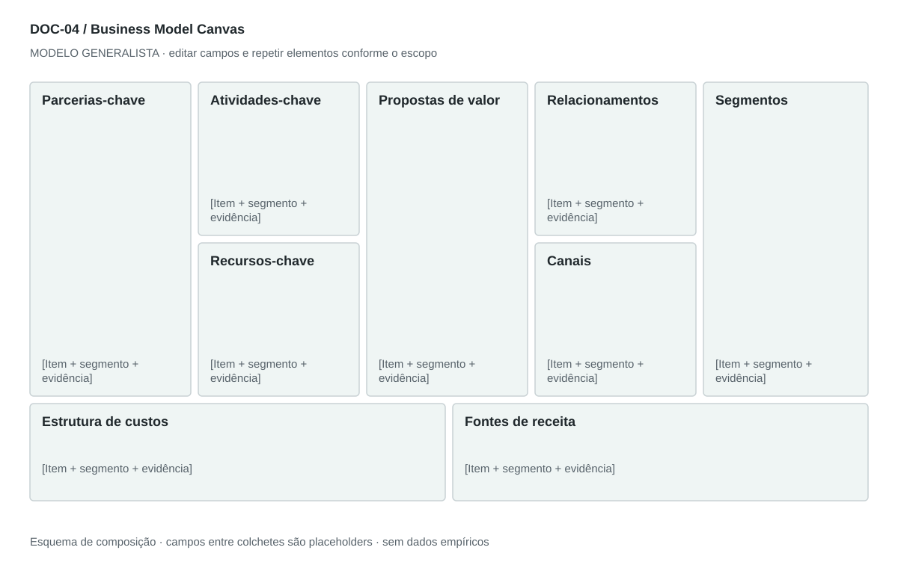

DOC-04 / Biblioteca documental generalista
Business Model Canvas
Sintetizar como o negócio cria, entrega e captura valor, mantendo coerência entre os nove blocos.
Modelo de investigação. Não representa uma análise concluída. Campos vazios devem permanecer identificados; não inventar dados para completar figuras.
Estrutura editorial
Uma prancha A3 paisagem com nove blocos na topologia do Canvas e anexo textual de 1–2 páginas para evidências. Usar poucos itens priorizados por bloco.
Visual previsto

Parceiros à esquerda; atividades/recursos; valor ao centro; relacionamento/canais; segmentos à direita. Custos e receitas na faixa inferior. Cada item pode carregar um marcador de evidência.
Imagens: O próprio Canvas é a imagem principal; ícones pequenos opcionais por bloco. Não usar fotos decorativas. Preservar a atribuição conceitual do Business Model Canvas; o desenho fornecido é original.
Dicionário de dados
| Campo | Tipo | Dado necessário |
|---|
| bloco | enum | segmentos, valor, canais, relacionamento, receitas, recursos, atividades, parceiros, custos |
| item | texto | Afirmação curta e verificável do bloco |
| segmento_id | referencia | Segmento ao qual o item serve |
| conexao_id | referencia | Item de outro bloco que sustenta a afirmação |
| prioridade | enum | essencial, complementar ou a testar |
| pagador | referencia | Quem efetivamente financia a oferta |
| unidade_economica | texto | Denominador consistente de receita e custo |
Todos os registros precisam de classificação, fonte, localização, datas, confiança e limitação. Números também precisam de unidade, moeda quando aplicável e período.
Modelo preenchível
Os quadros amarelos podem ser editados nesta página para impressão. Edições não são gravadas automaticamente: use o Markdown/JSON para manter uma versão ou imprima em PDF após editar.
[Negócio] · [Versão] · [Data-base] · [Autor] · [Audiência] · [Território]
Pergunta decisória: [A preencher]
Escopo: [A preencher]
1. Segmentos de clientes
Quem usa, paga e decide; criar IDs distintos por lado de plataforma.
[Análise + evidência + implicação + lacuna]
2. Propostas de valor
Problema, resultado e diferencial por segmento.
[Análise + evidência + implicação + lacuna]
3. Canais
Aquisição, venda, entrega e pós-venda, com custo e dependência.
[Análise + evidência + implicação + lacuna]
4. Relacionamentos
Aquisição, assistência, retenção e custo de servir.
[Análise + evidência + implicação + lacuna]
5. Fontes de receita
Pagador, unidade, preço, frequência e condição de recebimento.
[Análise + evidência + implicação + lacuna]
6. Recursos-chave
Pessoas, ativos, tecnologia, capital e acesso necessários.
[Análise + evidência + implicação + lacuna]
7. Atividades-chave
O trabalho essencial para cumprir a promessa.
[Análise + evidência + implicação + lacuna]
8. Parcerias-chave
O que é fornecido, por quem e sob qual dependência.
[Análise + evidência + implicação + lacuna]
9. Estrutura de custos
Fixos, variáveis, implantação e escala, sem misturar caixa e lucro.
[Análise + evidência + implicação + lacuna]
Decisão e próximo passo
[Decisão e justificativa]
[Alternativa considerada]
[Condição de reversão]
[Ação, responsável, prazo e critério]
Fontes e limites
[Fonte + localização + datas + o que sustenta + limitações]
Critérios de revisão
- Os nove blocos estão presentes na mesma visão.
- Receitas têm pagador e unidade; custos sustentam atividades e recursos.
- Cada segmento tem proposta e canal correspondentes.
Estudo do arquivo original
DOC-04-fonte.pdf — Duas páginas em paisagem com cinco colunas verticais e pequenos ícones. A primeira página concentra parceiros, atividades, valor, relacionamento e segmentos; a segunda traz recursos, custos, receitas e canais. A distribuição mantém os blocos, mas a quebra em duas páginas prejudica a leitura conjunta.
Observação do original e adaptação recomendada são camadas distintas. Nomes, preços, localidades, contatos e conclusões do caso-fonte não devem preencher a nova análise.